Kamimachi
Kamimachi · Miyagi
Kamimachi
Highlighted on the Miyagi map.
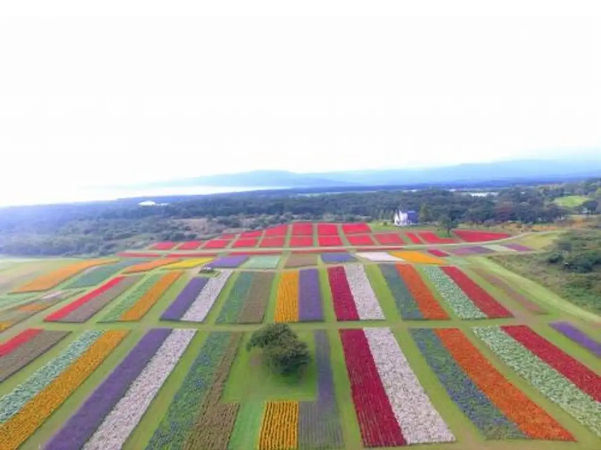
Stay
たびの邸宅 やくらいコテージ
Tabino Teitaku Yakurai Koteeji
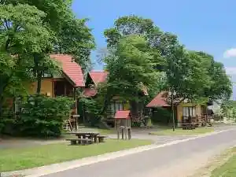
ペンション ＫＡＭＩＦＵＪＩ
KAMIFUJI
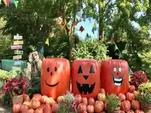
Dining
笠聖
Kasa Hijiri
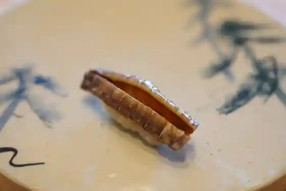
おざわ食堂
Ozawa Shokudo
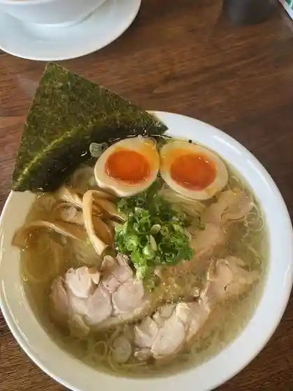
齋虎
Sai Tora
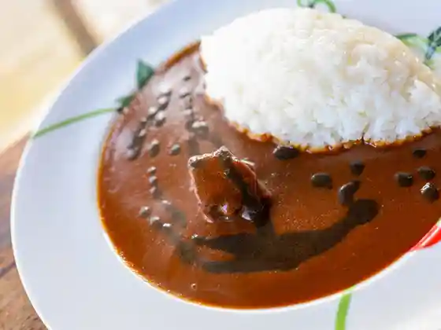
GENJIRO
GENJIRO
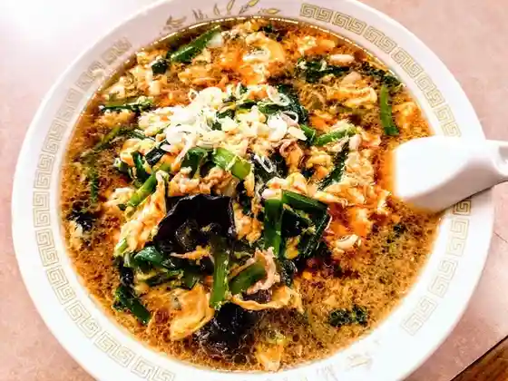
中華料理 栄楽
Chuukaryouri Sakae Raku
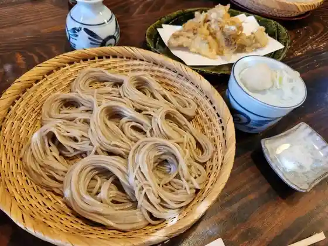
蕎麦 りぞう庵
Soba Rizou Iori
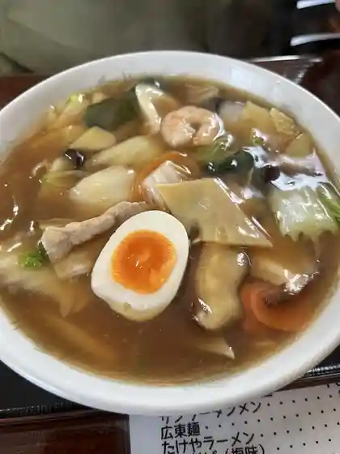
たけや
Takeya
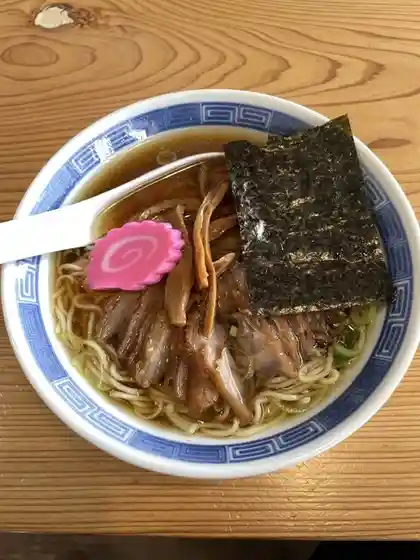
ごはん屋 日に日に
Gohan Ya Nichi Ni Nichi Ni
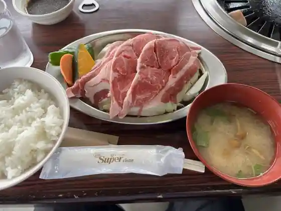
やくらいハイツ
Yakurai Haitsu
加美町食堂 ピッチョーネ
Kami Machi Shokudo Pitchoone
やくらい土産センター・山の幸センター
やくらい土産センター・山の幸センター
味楽
Aji Raku
滝庭の関 駒庄
Taki Niwa No Kan Koma Shou
中華そば みつば
Chuuka Soba Mitsuba
フォーリア
Fooria
えちご亭
Echigo Tei
かさ松
Kasa Matsu
リベルテ
Riberute
あさりん菓子店
Asarin Kashi Mise
ばーばの家
Baabano Ie
やくらい薬師の湯
Yakurai Kusurishi No Yu
ぶな林
Buna Hayashi
いろは食堂
Iroha Shokudo
こだわりとんかつひかり亭
Kodawaritonkatsuhikari Tei
天鳳
Ten Ootori
金村屋
Kanamura Ya
文華
Bunka
丸大屋
Marudai Ya
宗右衛門
Souemon
ささや食堂
Sasaya Shokudo
る ぱん こなこな
Ru Pan Konakona
カフェ ぐらん
Kafe Guran
中国料理 東華
Chuugokuryouri Touka
凛凛
Rin Rin
Boulangerie ARBRE
Boulangerie ARBRE
だがし屋 竹とんぼ
Dagashi Ya Take Tonbo
どりーむ
Doriimu
米澤屋
Yonezawa Ya
門眞菓子店
Kadoma Kashi Mise
カミフジ
Kamifuji
梅花堂
Baika Dou
食彩市場 みやざきどどんこ館
Shokusai Shijou Miyazakidodonko Kan
菓子職人
Kashi Shokunin
喜進堂
Ki Susumu Dou
All Time High Coffee Roastery
All Time High Coffee Roastery
広原ドライブイン
Hirohara Doraibuin
ぶなの実
Bunano Mi
おかしの越後屋
Okashino Echigoya
つどい
Tsudoi
もち処大滝
Mochi Tokoro Ootaki
ENSEMBLE COFFEE
ENSEMBLE COFFEE
外の音
Soto No Oto
おたる
Otaru
喜久しん
Yoshihisa Shin
陽だまりCafé
You Damari Caf E
はなや
Hanaya
やくらいサイズゴルフ倶楽部 レストラン
Yakurai Saizugorufu Kurabu Resutoran
カフェ 路上
Kafe Rojou
アポロ菓子店
Aporo Kashi Mise
関精肉畜産
Kan Seiniku Chikusan
田中酒造店
Tanaka Shuzou Mise
加美パルコ
Kami Paruko
コンツェルトハウス
Kontsuerutohausu
きっちんとまと
Kitchintomato
いっぷく亭
Ippuku Tei
平禄寿司 宮城加美中新田店
Taira Roku Sushi Miyagi Kami Nakaniida Mise
和風レストランまるまつ 中新田店
Wafuu Resutoran Marumatsu Nakaniida Mise
おなつ食堂
Onatsu Shokudo
モンペリエ 中新田店
Monperie Nakaniida Mise
あじわいの朝 中新田店
Ajiwaino Asa Nakaniida Mise
IZAKAYAきたむら
IZAKAYA
不二家 イオンSuC加美店
Fujiya Ion Suc Kami Mise
パン工場 イオンスーパーセンター加美店
Pan Koujou Ionsuupaasentaa Kami Mise
ENSEMBLE COFFEE
ENSEMBLE COFFEE
カフェ・ド・ゴーシュ
カフェ・ド・ゴーシュ
宮川とうふ店
Miyagawa Toufu Mise
居酒屋さすけ
Izakaya Sasuke
セブンイレブン 宮城中新田矢越店
Sebun'irebun Miyagi Nakaniida Yagoshi Mise
勝栄堂
Katsuei Dou
シキシマヤ
Shikishimaya
なんぶ家
Nanbu Ie
レストラン フォーリア
Resutoran Fooria
松泉堂
Matsu Sendou
あじまん DCM中新田店
Ajiman Dcm Nakaniida Mise
ホルモン屋
Horumon Ya
ほっともっと 加美町店
Hottomotto Kami Machi Mise
菓子心 つきやま
Kashi Kokoro Tsukiyama
酒のもりか
Sake Nomorika
茶房うちみ
Sabou Uchimi
山和酒造店
Yama Wa Shuzou Mise
はやせ鮎 宮城鮎工房
Hayase Ayu Miyagi Ayu Koubou
ウジエスーパー 中新田店
Ujiesuupaa Nakaniida Mise
ほし栄
Hoshi Sakae
やくらいガーデン
Yakurai Gaaden
三嶋八百屋
Mishima Yaoya
菅原商店
Sugawara Shouten
中勇酒造店
Naka Isami Shuzou Mise
カルム
Karumu
きばらし
Kibarashi
cafe ma:ni
cafe mani
にるばな
Nirubana
ひさご
Hisago
居酒屋亜紀子
Izakaya Akiko
ヘルシーハット
Herushiihatto
もち茶屋
Mochi Chaya
やぶ留
Yabu Ryuu
呑もう家
Nomo U Ie
めん六や 宮城加美店
Men Roku Ya Miyagi Kami Mise
黒田旅館
Kuroda Ryokan
居酒屋成
Izakaya Sei
Restaurant Bunarin
Restaurant Bunarin
Teuchi Soba Ryusei
Teuchi Soba Ryusei
Chinese Restaurant Eiraku
Chinese Restaurant Eiraku
Miraku
Miraku
Soba Tempura Unagi Nambu Yashiki Kamimachi
Soba Tempura Unagi Nambu Yashiki Kamimachi
Karaoke Dream
Karaoke Dream
Nambuya
Nambuya
Ayu No Sato Sansuitei Bandai
Ayu No Sato Sansuitei Bandai
Yakiniku Goten
Yakiniku Goten
Nomoya
Nomoya
Tenho
Tenho
Komonzushi
Komonzushi
Kishindo
Kishindo
Heirokuzushi Nakanida
Heirokuzushi Nakanida
Yakko Shokudo
Yakko Shokudo
Yabutome
Yabutome
Shosendo Pastry
Shosendo Pastry
Nirvana
Nirvana
Toka
Toka
Tampopo
Tampopo
Yakinikutei
Yakinikutei
Sasaki Seimensho
Sasaki Seimensho
Aeru
Aeru
Yoro Notaki Kamimachi
Yoro Notaki Kamimachi
Rizoan Yonezawa
Rizoan Yonezawa
Yogorozushi Nakanida
Yogorozushi Nakanida
Hormone Benkei
Hormone Benkei
Ikkakutei
Ikkakutei
Cafe de Gosh
Cafe de Gosh
Calum
Calum
Kikushin
Kikushin
Liberte
Liberte
Tonkatsu Kitamura
Tonkatsu Kitamura
Fumieharahan
Fumieharahan
Daifuku
Daifuku
Akemi
Akemi
Belmondo
Belmondo
Izakaya Yuki
Izakaya Yuki
Meeting
Meeting
Kaika Tei Izakaya Kami
Kaika Tei Izakaya Kami
Momma Pastry
Momma Pastry
Echigoya Pastry
Echigoya Pastry
Sasaki Kaikan
Sasaki Kaikan
Apollo Pastry
Apollo Pastry
Hakubai Candy
Hakubai Candy
Sasakiya Confectionery
Sasakiya Confectionery
Eishindo
Eishindo
Confectionery Shoeido
Confectionery Shoeido
Aruburu
Aruburu
Hana Hana
Hana Hana
I Wonder Public Cafe Restaurant
I Wonder Public Cafe Restaurant
Cafe Atom
Cafe Atom
Takemura
Takemura
Shokudo Ito
Shokudo Ito
Onsen
Yakurai Yakushi-no-Yu
Day-use hot spring at Yakurai Resort
Shop
Ayu-no-Sato Local Products Hall
Local products hall for Kami specialties including ayu-related goods
Yakurai Souvenir & Mountain Goods Center
Resort souvenir and mountain-produce shop at Yakurai
Sights
Yakurai Garden
Seasonal flower garden plateau beneath Mount Yakurai
Mount Yakurai
Symmetrical volcanic peak and hiking landmark of Kami
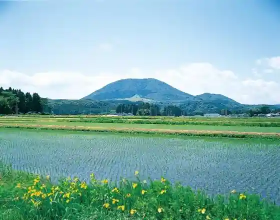
Otaki Rural Park Campground
Rural park campground in Kahara Takinohara
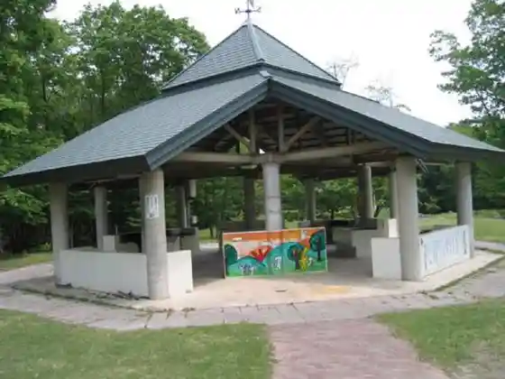
Weaving Transmission Hall
Hands-on weaving hall preserving local textile skills
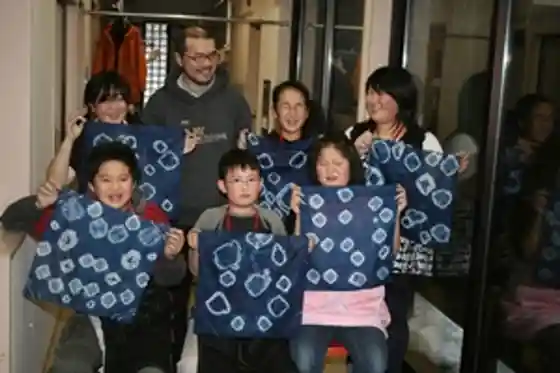
Pottery Village Campground
Campground beside the Kirikomi pottery area
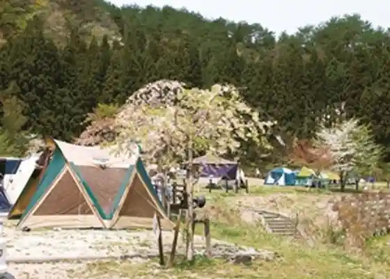
Yakurai Shrine
Shrine at Uenome Omiya linked to Mount Yakurai
Arasawa Nature Hall
Nature interpretation hall in Kahara
Nakaniida Culture Hall Bach Hall
Town culture hall known for its concert acoustics
Serizawa Chosuke Tohoku Ceramic Museum
Ceramic culture museum named for archaeologist Serizawa Chosuke
Zuiun-ji Temple
Temple in Kitamachi
Omiya-ji Temple Gate
Historic temple gate at Uenome Omiya
Kashima Shrine
Shrine in Yokkaichiba
Kirikomi Pottery Memorial Hall
Memorial hall for Kirikomi ware in Miyazaki
Bokusetsu Ink Painting Museum
Ink-painting museum inside Sawazakura Park
Arasawa Skunk Cabbage
Spring wetland colony of Asian skunk cabbage in Arasawa
Narumegawa Ayu Fishing Experience
Seasonal ayu fishing experiences on the Naruse River
Fureai-no-Mori Park Golf
Park-golf course in Nakiriya Aokibara
Yakurai Park Golf
Park-golf course beside Yakurai Resort facilities